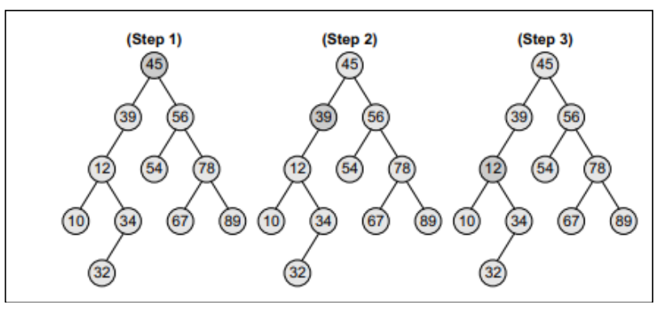

In a binary search tree, all the nodes in the left sub-tree have a value less than that of the root
node. Correspondingly, all the nodes in the right sub-tree have a value either equal to or greater
than the root node. The same rule is applicable to every sub-tree in the tree. (Note that a binary
search tree may or may not contain duplicate values, depending on its implementation.)
To summarize, a binary search tree is a binary tree with the following properties:
• The left sub-tree of a node N contains values that are less than N’s value.
• The right sub-tree of a node N contains values that are greater than N’s value.
• Both the left and the right binary trees also satisfy these properties and, thus, are binary
search trees.
Operations on Binary Search Tree:
•Searching for a Node in a Binary Search Tree
• The search function is used to find whether a given value is present in the tree or not.
The searching process begins at the root node. The function first checks if the binary
search tree is empty. If it is empty, then the value we are searching for is not present
in the tree. So, the search algorithm terminates by displaying an appropriate message.
• However, if there are nodes in the tree, then the search function checks to see if the
key value of the current node is equal to the value to be searched. If not, it checks if
the value to be searched for is less than the value of the current node, in which case it
should be recursively called on the left child node. In case the value is greater than
the value of the current node, it should be recursively called on the right child node.

• Inserting a New Node in a Binary Search Tree
The insert function is used to add a new node with a given value at the correct position in the
binary search tree. Adding the node at the correct position means that the new node should
not violate the properties of the binary search tree. The initial code for the insert function is
similar to the search function. This is because we first find the correct position where the
insertion has to be done and then add the node at that position. The insertion function
changes the structure of the tree. Therefore, when the insert function is called recursively, the
function should return the new tree pointer.
• In Step 1 of the algorithm, the insert function checks if the current node of TREE is
NULL. If it is NULL, the algorithm simply adds the node, else it looks at the current
node’s value and then recurs down the left or right sub-tree.
• If the current node’s value is less than that of the new node, then the right sub-tree is
traversed, else the left sub-tree is traversed. The insert function continues moving
down the levels of a binary tree until it reaches a leaf node. The new node is added by
following the rules of the binary search trees. That is, if the new node’s value is
greater than that of the parent node, the new node is inserted in the right sub-tree, else
it is inserted in the left sub-tree.
• The insert function requires time proportional to the height of the tree in the worst
case. It takes O(log n) time to execute in the average case and O(n) time in the worst
case.
• Deleting a Node from a Binary Search Tree
The delete function deletes a node from the binary search tree. However, utmost care should
be taken that the properties of the binary search tree are not violated and nodes are not lost in
the process. We will take up three cases in this section and discuss how a node is deleted
from a binary search tree.
•Case 1: Deleting a Node that has No Children
• Case 2: Deleting a Node with One Child
• Case 3: Deleting a Node with Two Children
• Traversing a Binary Tree.
Traversing a binary tree is the process of visiting each node in the tree exactly once in a
systematic way. Unlike linear data structures in which the elements are traversed
sequentially, tree is a nonlinear data structure in which the elements can be traversed in many
different ways. There are different algorithms for tree traversals. These algorithms differ in
the order in which the nodes are visited. a. Pre-order Traversal
To traverse a non-empty binary tree in pre-order, the following operations are
performed recursively at each node.
The algorithm works by:
1. Visiting the root node.
2. Traversing the left sub-tree.
3. Traversing the right sub-tree.
In the above figure, the pre-order traversal of the tree is given as A, B, C. Root node
first, the left sub-tree next, and then the right sub-tree. Pre-order traversal is also
called as depth-first traversal. In this algorithm, the left sub-tree is always traversed
before the right sub-tree. The word ‘pre’ in the pre-order specifies that the root node
is accessed prior to any other nodes in the left and right sub-trees. Pre-order algorithm
is also known as the NLR traversal algorithm (Node-Left-Right).
b. In-order Traversal
Here, all the elements with a value lower than a given value are accessed before the
elements with a higher value. To traverse a non-empty binary tree in in-order, the
following operations are performed recursively at each node.
The algorithm works by:
1. Traversing the left sub-tree.
2. Visiting the root node.
3. Traversing the right sub-tree.
In the above figure, the in-order traversal of the tree is given as B, A, and C. Left sub-
tree first, the root node next, and then the right sub-tree. In-order traversal is also
called as symmetric traversal. In this algorithm, the left sub-tree is always traversed
before the root node and the right sub-tree. The word ‘in’ in the in-order specifies that
the root node is accessed in between the left and the right sub-trees. In-order
algorithm is also known as the LNR traversal algorithm (Left-Node-Right).
c. Post-order Traversal
Post-order traversals are used to extract postfix notation from an expression tree. To
traverse a non-empty binary tree in post-order, the following operations are
performed recursively at each node.
The algorithm works by:
1. Traversing the left sub-tree.
2. Traversing the right sub-tree.
3. Visiting the root node.
In the above figure, the post-order traversal of the tree is given as B, C, and A. Left
sub-tree first, the right sub-tree next, and finally the root node. In this algorithm, the
left sub-tree is always traversed before the right sub-tree and the root node. The word
‘post’ in the post-order specifies that the root node is accessed after the left and the
right sub-trees. Post-order algorithm is also known as the LRN traversal algorithm
(Left-Right-Node).